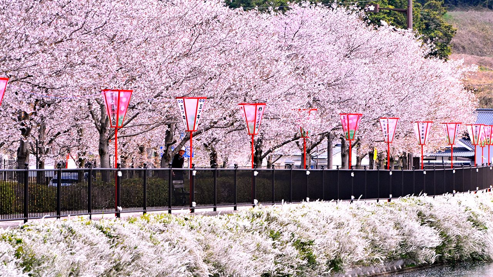
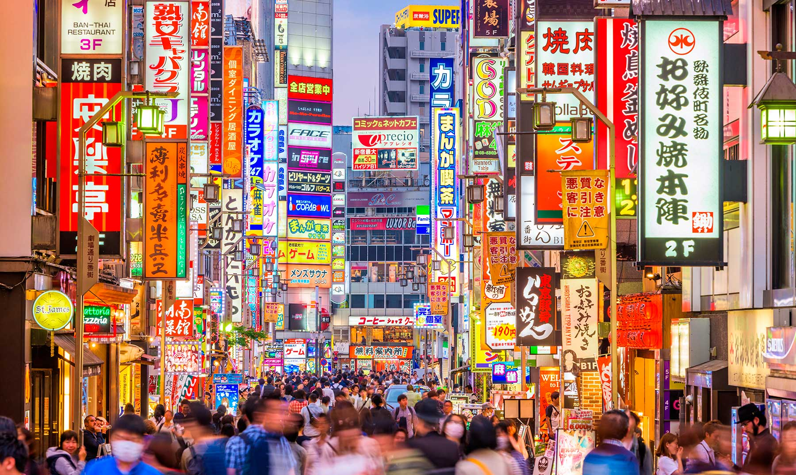

La Torre de Tokyo

La Torre de Tokyo es un monumento icónico de la ciudad y una de las estructuras más altas del mundo. Ofrece impresionantes vistas de la ciudad desde su observatorio y es una visita obligada para cualquier turista en Tokio.
Actividades: Visita la Torre de Tokio y disfruta de las vistas panorámicas de la ciudad desde su observatorio. También puedes explorar la zona circundante, llena de tiendas y restaurantes.
Parque Ueno

El Parque Ueno es uno de los parques más grandes y antiguos de Tokio. Ofrece una variedad de atracciones, como el zoológico de Ueno, el templo de Kiyomizu Kannon-do y el museo nacional de Tokio.
Actividades: Visita el Parque Ueno y disfruta de sus jardines, templos y museos. También puedes asistir a un espectáculo de kabuki en el teatro nacional de Japón, ubicado en el parque.
Barrio de Shinjuku

El barrio de Shinjuku es un centro de entretenimiento y negocios en Tokio. Aquí encontrarás rascacielos, centros comerciales, restaurantes y bares. También es famoso por su vida nocturna vibrante.
Actividades: Explora el barrio de Shinjuku y visita los lugares de interés como el edificio del gobierno metropolitano de Tokio y el santuario Hanazono. También puedes disfrutar de la comida local en los restaurantes de la zona.